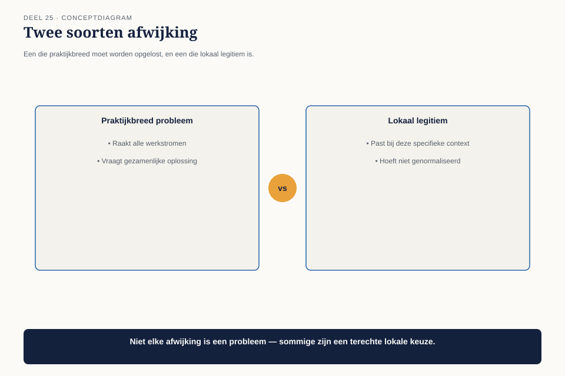

Deel 25 — Community of practice
Slidedeck · Ductus-cursus BTABoK · Niveau 3 · deel 25 van 30 · 22 slides
Slide 1 — Titel: Community of practice
Deel 25
Ductus
Slide 2 — Agenda: Vandaag
- Vijf werkstromen, vijf talen
- De signalen van uiteenvallende praktijk
- Het kennisdelingsritme
- Wat lokaal mag blijven
Slide 3 — Sectie: 1. Vijf werkstromen, vijf talen
Slide 4 — Figuur: Vijf eilanden

Slide 5 — Bullets: Twee dagen kwijt
- Een architect valt tijdelijk in bij een andere werkstroom
- Kost haar twee dagen om te begrijpen hoe het besluitenlogboek daar werkt
- Niet fundamenteel anders — genoeg om te verwarren
Slide 6 — Sectie: 2. De signalen
Slide 7 — Figuur: Drie vroege waarschuwingen

Slide 8 — Tabel: De signalen
| Signaal | Voorbeeld |
|---|---|
| Instrumenten wijken af zonder besluit | veld verdwenen, niemand besloot dat |
| Jargon divergeert | “breukpunt” betekent twee dingen |
| Niemand kent elkaars werk | niemand weet wat de ander opleverde |
Slide 9 — Opdracht: Opdracht 1 — De drie signalen herkennen
20 minuten, individueel
Eigen praktijk · welk signaal herken je?
Slide 10 — Sectie: 3. Het kennisdelingsritme
Slide 11 — Figuur: Elke twee weken, 30-45 minuten

Slide 12 — Bullets: De vorm
- Eén werkstroom deelt iets geleerd of aangepast
- Praktijkbreed, of alleen voor deze werkstroom?
- Besluit gaat naar het gedeelde besluitenlogboek
Slide 13 — Statement: Binnen twee maanden
Het ontbrekende veld hersteld. Eén betekenis voor “breukpunt.”
Slide 14 — Opdracht: Opdracht 2 — Het kennisdelingsritme ontwerpen
20 minuten, tweetallen
Frequentie · duur · vorm · slotvraag
Slide 15 — Sectie: 4. Wat lokaal mag blijven
Slide 16 — Figuur: Twee soorten afwijking

Slide 17 — Tabel: Het onderscheid
| Corrigeren | Lokaal legitiem | |
|---|---|---|
| Raakt | de kern | een aanvulling |
| Voorbeeld | ontbrekend veld | extra view voor één werkstroom |
Slide 18 — Statement: Dezelfde logica als de patroonkaart (deel 17)
“Wanneer het niet past” is geen fout — het is een grens
Slide 19 — Opdracht: Opdracht 3 — Praktijkbreed of lokaal legitiem
15 minuten, individueel
Vier situaties
Slide 20 — Opdracht: Opdracht 4 — De invalproef
15 minuten, groepen van 3-4
Hoe lang tot iemand van buiten operationeel is?
Slide 21 — Bullets: Het effect na twee maanden
- Een invaller: binnen een halve dag operationeel
- Was eerder twee dagen
- Gedeeld jargon, gedeeld instrument, gedocumenteerde uitzondering
Slide 22 — Titel: Volgende keer
Deel 26 — Board-communicatie
Hoe leg je Wtp uit aan een raad van bestuur zonder technische achtergrond?